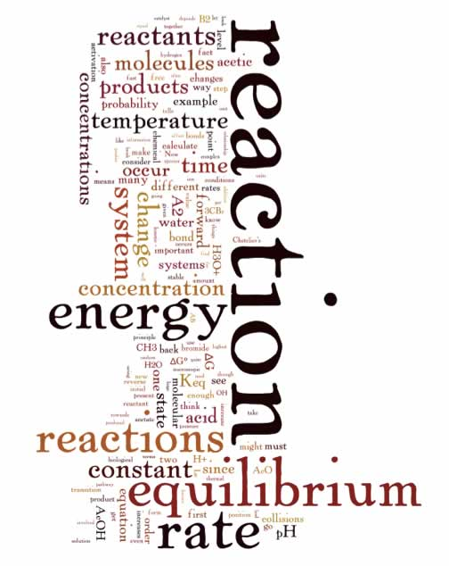

| Chapter 8: How far, how fast? – knowledge statements and learning goals |
After our overview of a range of common
chemical reactions (chapter 7), you might begin to ask yourself,
what controls which reactions occur when and where? For example:
a wooden log or a tank of gasoline can sit, unchanging for years,
then with only a little “provocation” burst into flames
(or explodes). At the same time, other reactions occur in a more
stately fashion - an iron nail slowly rusts, or dead bodies decompose
(even in the absence of parasites, microbes, or detritivores). Some
reactions can, with time, go to completion - there is no wood left
in a completely burnt log, no metal left once the rusting is complete.
NaCl and HCl ionize completely and rapidly when reacted with water,
but - as we have seen acetic acid does not. Some reactions give off
energy (for example combustion reactions), while others absorb energy
from their surroundings (for example the dissolution of many salts
in water). Some reactions seem completely and totally irreversible
- once a log starts burning, it does not stop and reappear, reassembled
from CO2 and H2O (and energy). |
 |
But, perhaps surprisingly, at the molecular level all reactions are reversible, at least in theory. In fact: we can reassemble the log (in a way) by allowing a tree to grow, using CO2 from the air, H2O from the ground, and energy from the sun (photosynthesis), but the reverse reaction is far more complex and involved than the simple “forward reaction” - that is, burning. So what determines whether a reaction will happen or how far it will go, or even if it will go in the forward and reverse directions? Are these mysteries of the universe, or can they be understood in a coherent manner? Well, it turns out that once again, the universe behaves in an orderly way, and by paying attention to various experimental observations chemists have, over the last few centuries, come to understand the factors that control the rate and extent of reactions. Our studies of these ideas are going to lead us back to thermodynamics and free energy, as well as the details of the molecular reorganizations that occur during the forward and reverse reactions. In this chapter, we introduce concepts that will allow us to predict how far a reaction goes, and we will also consider how fast a reaction occurs. In both cases, the keys to our approach understanding the behavior of chemical reactions is to remember i) that they are really systems in which reactants and products interact with their environment and ii) that at the molecular level all reactions are reversible – what controls rates and final states are the probabilities that reactions occur. These probabilities change in a predictable manner as a function of concentrations and temperature (and other reaction conditions). Except for reactions driven by the absorption of light (and you could view those as collisions of a sort), all reactions involve collisions between molecules. That means that the concentrations of molecules and the temperature of the system will be important. The concentrations will determine how often various types of collisions take place (the more molecules per unit volume, the more frequently collisions will occur), while the temperature will determine the energetics of the collisions (although - recall that there is a distribution of kinetic energies of molecules at a particular temperature, so as we will see, not all collisions will lead to a reaction). As a reaction proceeds, and reactants are converted into products, so the probability of reactant molecules colliding decreases and the probability of reactant molecules colliding (productively) increases. This will continue until the rate of the forward reaction and the rate of the backward reactions are equal, and the system will reach “equilibrium”, a point at which no more macroscopic changes occur and at which the concentrations of reactants and products will, at the macroscopic scale, remain constant. As we will see the concentrations of reactants and products at equilibrium will also depend on the temperature. Molecular structure will also matter, since not all collisions will be productive - only those in which molecules hit each other in particular orientations (and with particular energies) will work. As an example, Brønsted-Lowry acid-base reactions are very fast; that is the probability that the reaction occurs per unit time is high. When an acid and a base are mixed together they react immediately, there is no waiting, no warming needed. The time it takes for the pH of an acid solution to change (upon the addition of the acid to water), is limited by the rate of mixing – at the molecular level, it occurs within an extremely short time. For example if we dissolve enough hydrogen chloride gas (HCl) in water to make an 0.1 M solution of hydrochloric acid, the pH immediately drops from 7 (the pH of water) to 1163. This measurement tells us that all the HCl has ionized, to give [H+] = 0.1 and [Cl–] = 0.1. Now let us take the case of acetic acid (CH3COOH).
If we dissolve enough acetic acid in water to make a 0.1 M solution,
the pH of the solution immediately changes from pH 7 (pure water)
to 2.9 (not 1). Even if you wait (as long as you want) the pH will
not change any further, it stays constant, around 3. You might well
ask “what is going on here?” The acid-base reaction
of acetic acid and water is fast, but the pH is not as low as you
might have predicted. We can calculate the [H+] from the pH, again
using the relationship pH = – log [H+] and [H+] = 10-pH giving
us a value of [H+] = 1.3 x 10–3 M. That is the concentration
of H+ is more than two orders of magnitude less than you might have
expected! If you think about this, it must mean that the amount of
acetic acid (AcOH) that actually reacted with the water must have
been very small indeed. In fact we can calculate how much reacted
using the relationships from the equation: There are two important issues here: first the reaction of acetic acid is fast, and second - apparently most of the acetic acid has not, in fact reacted with the water. But wait - there is more! Even if the reaction appears to have stopped, since the pH does not change any further; at the molecular level things are still happening. |
| That is, the reaction of acetic acid with water, continues on, but the reverse reaction occurs at the same rate, meaning that the bulk concentrations of all the species remain constant, even though individual molecules present in each population are constantly changing.As we will see the ideas about how far a reaction proceeds (towards products) and how fast it gets there are intertwined. We will be moving back and forth between the factors that affect these two reaction properties. | 8.1 How for, how fast? 8.2 Reaction rate 8.3 Activation energy 8.4 Catalysis 8.5 Equilibrium 8.6 Mechanisms |
Question to answer:
Questions to ponder:
|
| 22-Jun-2012 |